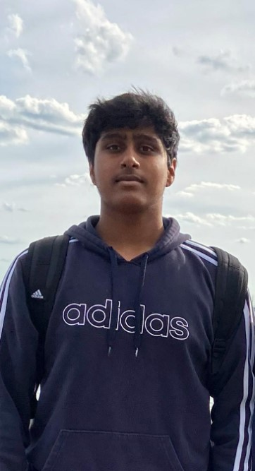

My name is Vijay Vemulapalli and I am a junior at Allen High School. I am currently taking Computer Science II along with many other Advanced Placement Classes. I am also passionate about Computer Science and am hoping to learn a lot about solving difficult algorithmic CS problems.
I was born in Dallas on July 2, 2006. I lived in Allen my whole life and I have made many friends who I have grown up with. My friend circle consists of others who are driven which keeps me ambitious. The saying "You are the average of your 5 closest friends" applies to me. I credit my hardworking and dedicated personality to them.
This year is very important for me because it has a large impact in which college I will be able to attend. I hope to get a good GPA and involve my self in many more great extracurricular activities. I hope to be admitted to UT or Purdue University. I also have a goal of becoming proficient in complex algorithmic computer science problems to be able to compete and move to the next level in a CS competition called USACO.
